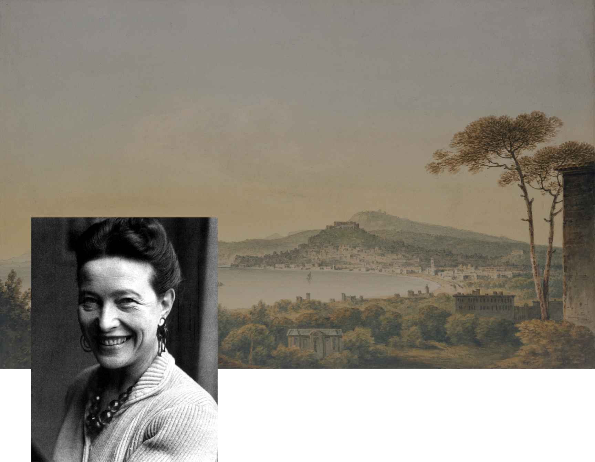
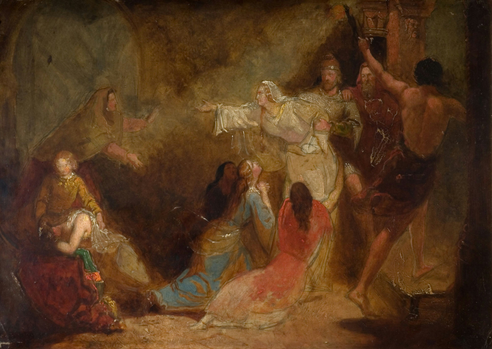

Сімона де
Бовуар
Сімона Де Бовуар- знаменита французька письменниця, філософиня і представниця другої хвилі фемінізму, а також однією з головних фігур екзистенціалізму у післявоєнній Франції. Вона найбільше відома своїм двотомним трактатом “Друга стать” (1949), у якому закликає до знищення міфу про «вічну жіночність». Ця праця стала класикою феміністичної літератури.
Біографія

Моменти, що формують

Сімона де Бовуар народилася 9 січня 1908 року в Парижі в досить багатій сім’ї. Батько, Жорж Бертран де Бовуар, був юридичним секретарем,який у всьому підтримував свою доньку та прихильно ставився до її спроб чогось досягти. Мати, Франсуаз, була строгою католичкою із сім’ї банкіра.
Симона в дитинстві була сильно релігійною, і навіть розглядала можливість стати черницею. Однак, в підлітковому віці вона втратила віру і залишалася атеїсткою до кінця свого життя. Після Першої світової війни вони втратили більшу частину свого капіталу та доньок відправили до монастирської школи.
Після того, як у 1925 році успішно склала іспити, Симона вступила до Католицького інституту та Інституту Сент-Марі. Потім в Сорбонні стала дев’ятою жінкою, яка отримала диплом цього закладу. Журі агрегації присудило Жану-Полю Сартру,відомому французькому філософу, перше місце, а Сімоні де Бовуар — друге, зробивши її в 21 рік наймолодшою людиною, яка успішно склала цей іспит.
У 1929
У 1972
Жан-Поль Сартр і Симона де Бовуар стали парою. Після суперечки з батьком де Бовуар, Сартр запропонував їй одружитися з ним “для проби”. Однак Симона вирішила ніколи не вступати в шлюб,не жити разом із ним,але лишатися «основними коханцями».
Письменниця була бісексуалкою.За своє життя Бовуар мала багато романів з чоловіками та жінками, але жоден не був подібний до її стосунків із американським письменником Нельсоном Алгреном, у якого вона була глибоко закохана.Проте їхня домовленість із Сартром залишалася незмінною, і вони були пов’язані один з одним протягом 51 року, аж до його смерті.
Незадовго до Другої світової війни пара переїхала до Парижа. У 1943 році вона опублікувала свій роман “Гостя”(L'Invitée), у якому описуються складні стосунки між нею, Сартром і Ольгою Козакевич. Роман отримав великий успіх.
Її стосунки з молодими жінками викликали чимало суперечок. У своїй книзі колишня студентка де Бовуар, стверджувала, що в часи навчання в ліцеї, її вчителька сексуально експлуатувала . У 1943 році Симона була відсторонена від викладацької діяльності через звинувачення в тому, що вона спокусила 17-річну студентку.
Бовуар оголосила себе феміністкою в 1972 році в інтерв’ю Le Nouvel Observateur і приєдналася до інших феміністок у заснуванні журналу Questions Féministes . У 1971 році вона написала і підписала Маніфест 343, публічну декларацію 343 жінок, які зізналися, що зробили аборт у той час, коли він був у Франції незаконним.
Провівши останню половину свого життя як ікона фемінізму ,Бовуар померла 14 квітня 1986 року. Її поховали разом із Сартром на цвинтарі Монпарнас у Парижі.


“Друга стать”
“«Друга стать» (1949) – феміністсько-філософський двотомник Сімони де Бовуар у стилі полемічного роману та соціологічного дослідження, який став одним із найважливіших феміністичних текстів ХХ століття.
З перших сторінок роману Бовуар наголошує, що її “орієнтиром буде мораль екзистенціалізму” Ставлячи провокативні питання: «Чи існує ще жінка? Добре це чи погано? Яке її місце в світі?», авторка детально аналізує поняття жіночої екзистенції, призначення і соціальної ролі жінки з усіх можливих сторін.
Екзистенціалізм — це філософський напрям, який розглядає питання особистої свободи, відповідальності та сенсу існування. Він акцентує на унікальності кожної людини та підкреслює її здатність робити свідомий вибір, не підкоряючись жодним обмеженням.
Ключовою концепцією цієї праці є ідея «Іншої», через яку авторка досліджує, як і чому жінка сприймається як «інша» щодо чоловіка. Також як це впливає на самосприйняття та самоцінність у суспільстві.
★Релігія та Міфи:
У своїй праці Сімона де Бовуар аналізує релігійні й культурні аспекти та як вони вплинули на становище жінок. Під час первісної доби жінка сприймалася як матір-годівниця, наймичка та незвідана природна сутність,в той час,як батько має права та особисту свободу. Вторинність жінки була особливо підкреслена і узаконена в християнстві, зокрема через міф про створення жінки з Адамового ребра: жінку бог створив з Адамового ребра і подарував йому, аби розвіяти його самотність.
★Міф про матріархат:
Авторка ставить під сумнів концепцію матріархату. Вона вважає, це міфом, з метою виправдати теперішнє підкорення жінок. Бовуар підкреслює, що жінка була виключена з процесів творення суспільного порядку, щоб закріпити її залежність від чоловіків.
★Освіта та творчість:
Письменниця аналізує,як суспільні норми та культурні стереотипи впливають на становище жінок в інтелектуальній та творчій сферах. У патріархальних суспільствах жінка асоціюється з духовністю та інтуїцією, а чоловік — із розумом і порядком. Однак,все-таки вони робили значні успіхи у навчанні та саморозвитку.
★Лесбійська любов:
Сімона де Бовуар також приділяє увагу темі лесбійської любові.Для неї це не лише сексуальна орієнтація, а й спосіб самовираження та опору. Деякі жінки обирають стосунки з іншими жінками через страх або відразу до чоловіків, бо ці стосунки здаються менш загрозливими та більш зрозумілими.